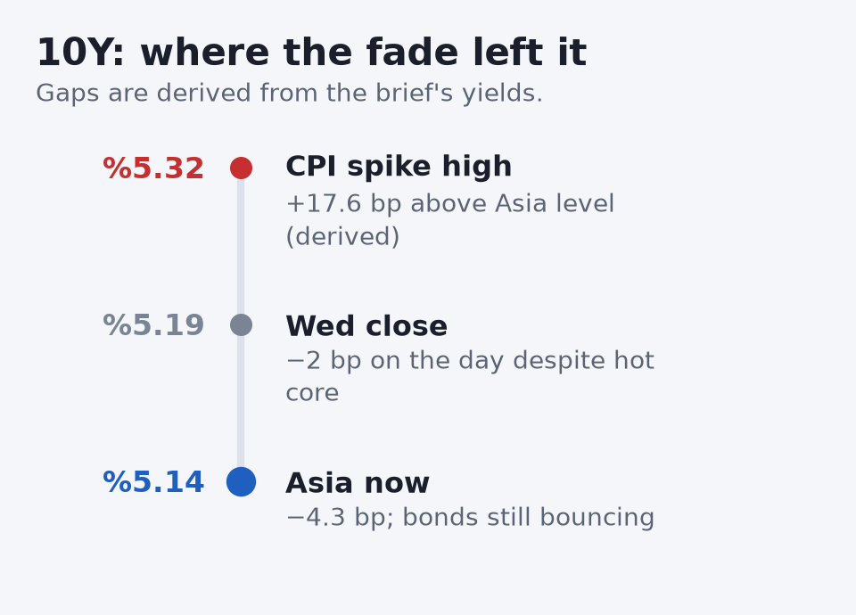
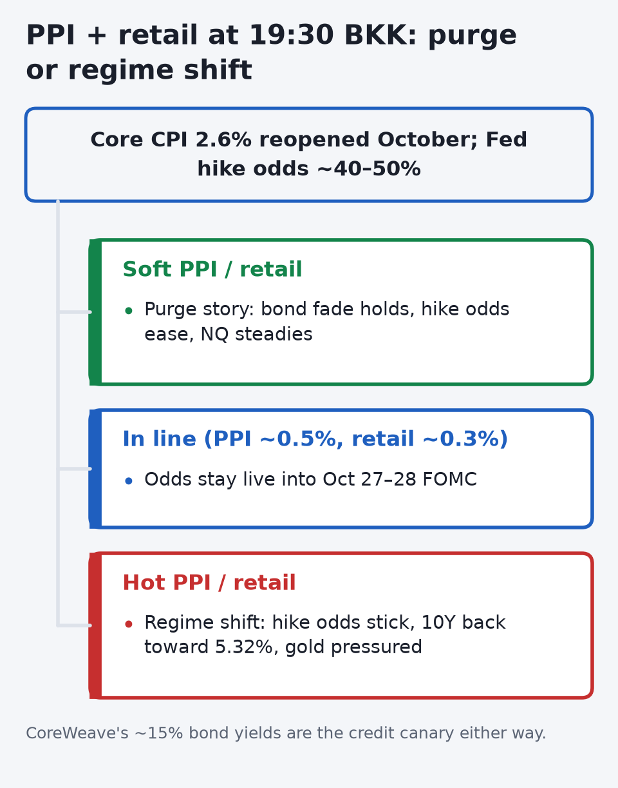
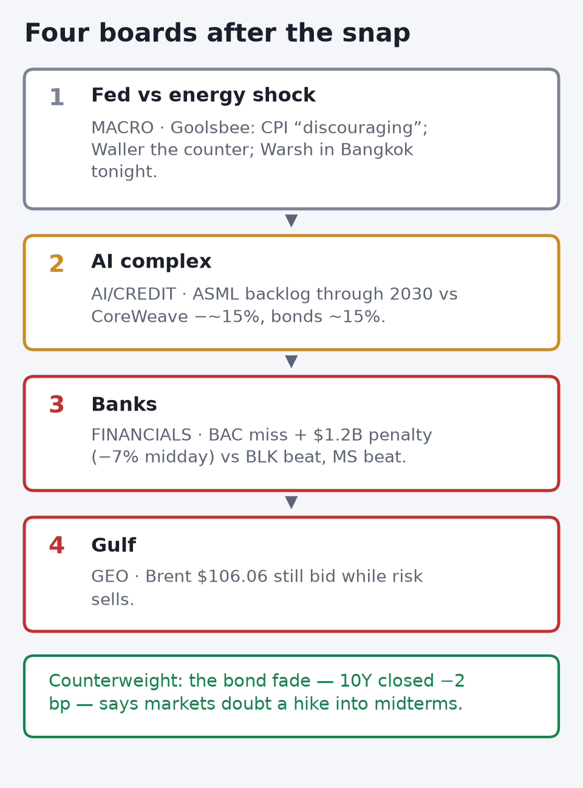
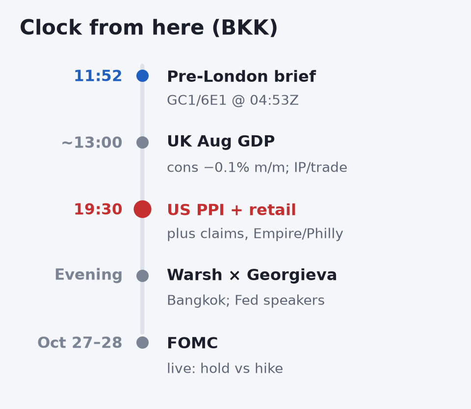
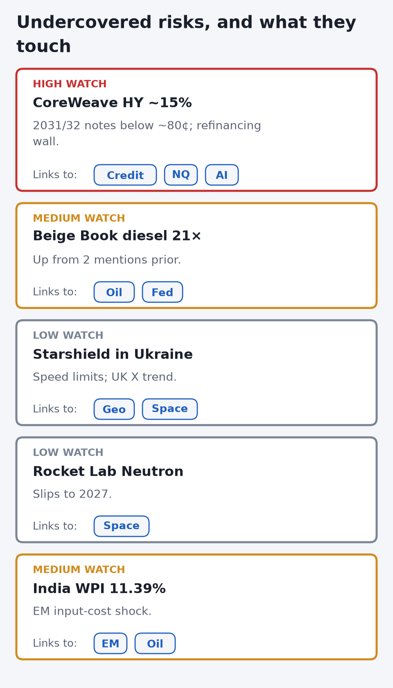
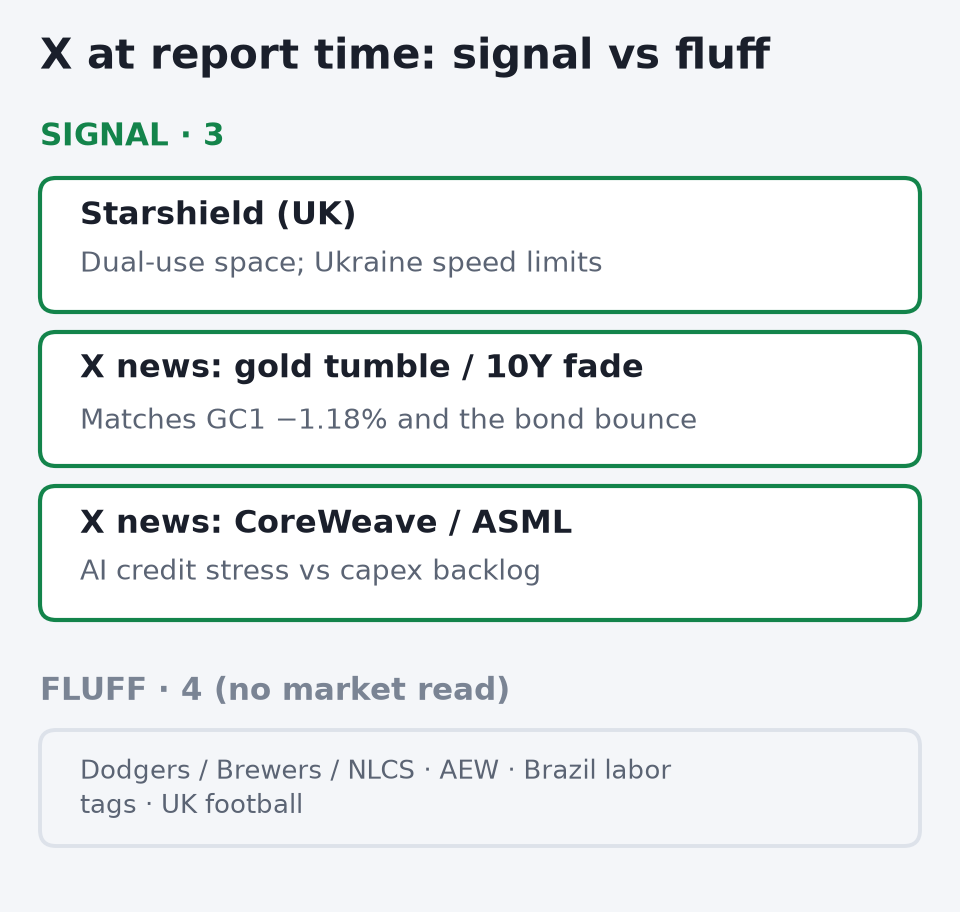
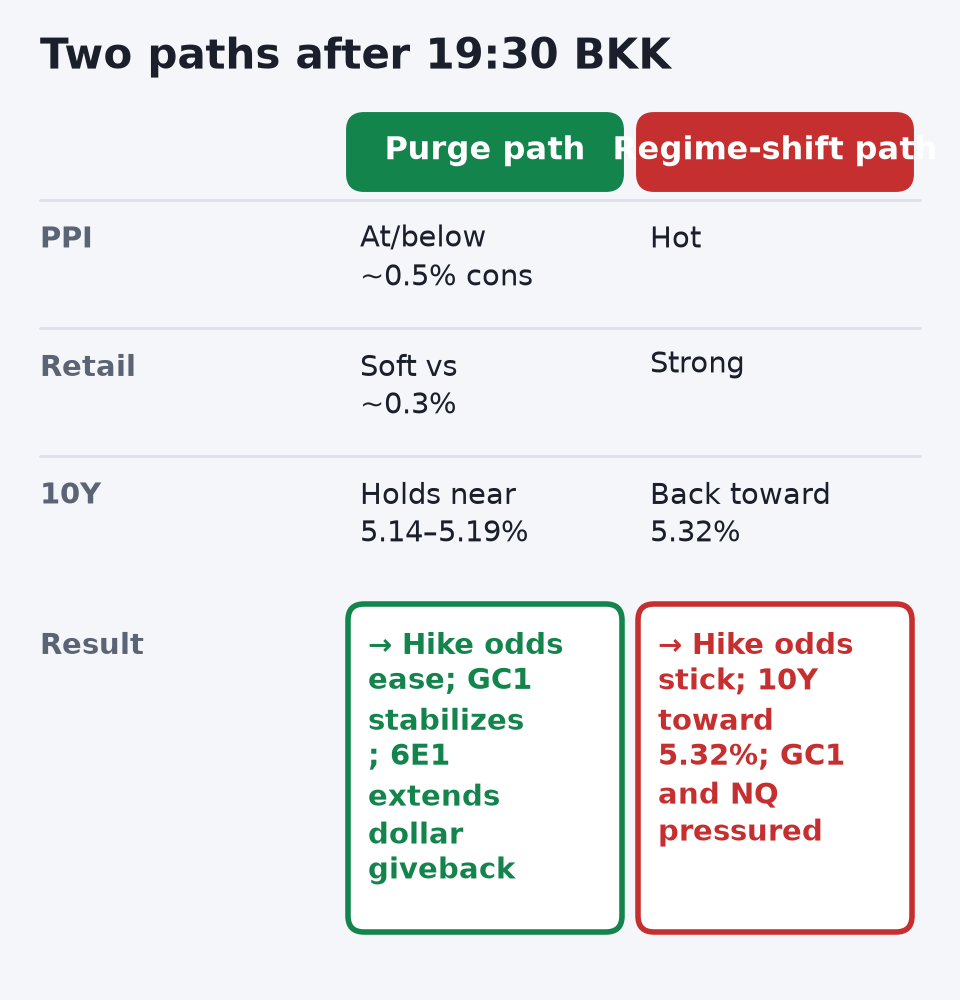

April · Market Intel, pre-London · Thu Oct 15, 2026 · ~11:52 BKK / ~05:52 London
Headline: Hot CPI did what coiled tape does — it snapped. S&P closed 7,718.94 (−1.11%), Nasdaq −1.88%, worst day since late July; then Asia kept NQ soft. The twist: yields spiked on the print, then faded hard — 10Y tagged ~5.32% and closed ~5.19%, Asia cash ~5.144%. Gold (GC1) still bleeds; euro futures (6E1) firm as the dollar gives back the CPI spike.
1) Top signals (overnight US + Asia)
- CPI + tape: Sep headline +0.6% m/m / 3.7% y/y (cons 3.6%); core +0.3% / 2.6% (cons ~2.5%), gasoline over half the jump. SPX −1.11% to 7,718.94, Nasdaq −1.88%; NQ futures 29,963 (−3.68%) still soft in Asia. (High: BLS via Reuters; HLB)
- Rates fade + Fed: 10Y spiked ~5.32%, closed 5.19%, Asia ~5.144%; 2Y ~4.95% then ~4.80%. Oct hike odds ~40–50%; Beige Book cites diesel 21×. (High: HLB, Yonhap)
- Gold / euro (04:53Z): GC1 4,166.70 (−1.18%) on hike odds and the real-rate/USD impulse; silver −7.9%. 6E1 1.1243 (+0.10%) as DXY (~102.14) gave back the CPI spike. (High: AtlasVector)
- Oil + AI credit: Brent settled $106.06, WTI $95.09 on IEA tightness + Gulf noise. CoreWeave −~15%; 2031/32 bonds yield ~14.8–15%. (High: HLB; CNBC/Reuters)
 The 10Y is ~18 bp (derived) below its CPI spike high. A hot PPI that sends it back toward 5.32% would re-price gold and NQ together. |
2) Why it matters
Headline was the gasoline story; core at 2.6% and broadening services reopened October. The bond fade says the market still doubts the Fed wants to hike into midterms and AI-capex cracks — but hike odds are no longer a free option. CoreWeave is the canary: 15% bond yields price a refinancing wall. Today’s PPI/retail decide purge vs regime shift.
 CPI broadened into services, so today's prints decide whether Wednesday was a one-day purge or a regime shift toward an October hike. |
3) Chessboard
- Fed vs energy shock: Goolsbee called CPI “discouraging” vs Waller; Warsh in Bangkok tonight.
- AI complex: ASML backlog through 2030 vs CoreWeave distress.
- Banks: BAC miss + $1.2B penalty (shares −7% midday) vs BLK beat (adj EPS $15.93); MS beat.
- Gulf: oil still bid when risk sells — a trap for soft-landing narratives.
 Oil staying bid while equities sell is the trap for soft-landing calls; the Fed board is where the others resolve. |
4) Leading indicators (BKK)
- ~13:00: UK Aug GDP (cons −0.1% m/m) + IP/trade.
- 19:30: US PPI (cons ~0.5% m/m) + retail (~0.3%) + claims + Empire/Philly.
- Evening: Fed speakers; Chair Warsh × IMF’s Georgieva in Bangkok.
- Oct 27–28: FOMC now live, hold vs hike.
 19:30 BKK is the day's binary; Warsh speaking in Bangkok later can confirm or cool whatever the prints start. |
5) Undercovered
- CoreWeave HY at ~15% — private-credit spillover tell.
- Beige Book diesel 21× (vs 2 prior).
- Starshield speed limits in Ukraine (UK X trend + X news). (Medium)
- Rocket Lab Neutron slips to 2027.
- India WPI 11.39%.
 CoreWeave's bond pricing is the private-credit spillover tell, and diesel in the Beige Book shows the energy shock reaching the real economy. |
6) What’s trending on X (~11:52 BKK)
- Signal: UK trend Starshield. X news (not trends): gold tumble, 10Y fade, CoreWeave, ASML, CPI wipe.
- Fluff: US Dodgers/Brewers/NLCS/AEW; WW Brazil labor tags + Dodgers; UK football.
 Trends themselves are mostly sports; the market signal is in X news, which echoes the gold and credit stories. Treat X items as medium until confirmed. |
Bottom line
Wednesday purged the coil. PPI + retail today decide if hike odds stick. GC1 needs a growth scare or a USD crack; 6E1 is already trading the dollar giveback.
Confidence: CPI, tape, rates, GC1/6E1, oil, earnings high; Fed hike odds medium–high; X items medium until a primary source confirms.  Gold needs a growth scare or a USD crack, and euro is already trading the dollar giveback. Today's prints pick which one gets fed. |
|